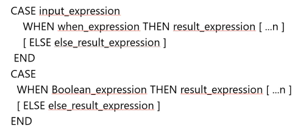
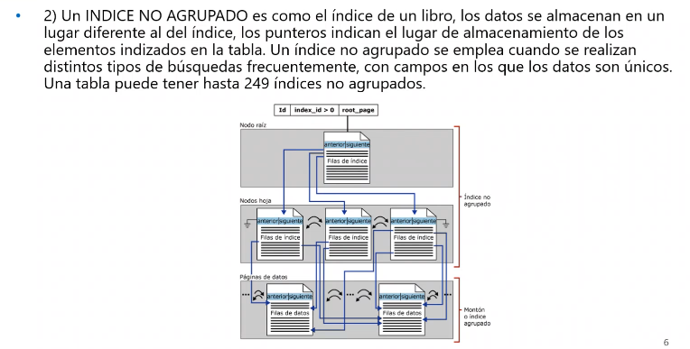

Clase 1
LIKE:Busca un patron especifico en una cadena

Funciones de agregado
Count(campo)Cuenta registros con contenido no nulo
Sum: Suma contenido de campos numéricos
Max: Obtiene el máximo valor de campos numéricos
Min:Obtienen el mínimo valor de campos numéricos
Avg:Obtiene el promedio de los valores de campos numéricos.
Group by:La función devuelve cantidad de registros, si queremos averiguar la cantidad de un grupo.
Having:Aplicar filtrado a funciones de agregado
Tipos de relaciones
Inner Join
Outer joins: Left Outer Join y Right Outer Join.


Self Join: Se llama a si misma.
Cross Joins: Es para una consulta de N por N

Operador Union: Unión entre dos consultas, deben tener la misma cantidad de campos y ser del mismo tipo.
Distinct Para eliminar los repetidos en una consulta
Top:
Backup y Restore:

Insert, Update y Delete
La instrucción INTO me permite crear una tabla a partir de una consulta.
Default:

La instrucción DELETE quita una o más filas en una tabla a menos que utilice una cláusula WHERE.
Cada fila eliminada se alamcena en el registro de transacciones.
La instrucción TRUNCATE TABLE elimina todas las filas de una tabla.
SQL Server conserva la estructura de la tabla y los objetos asociados.
Ambas se pueden deshacer con un ROLLBACK. TRUNCATE reinicará el contador para una tabla que contenga una columna IDENTITY. DELETE mantendrá el contador de la tabla para una columna IDENTITY. TRUNCATE es un comando DDL mientras que DELETE es un DML.
CASE: Es una expresión especial de T-SQL que permite mostrar un valor alternativo dependiendo del valor de una columna o variable.
Cardinalidad:
Restricciones de las tablas:

Normalización: Formas Normales en las BD
Clase 2:
Se normaliza para evitar la redundancia de los datos, disminuir problemas de actualización de los datos en las tablas y para proteger la integridad de los datos.
Primera forma normal(1FN)
Se encuentra en 1FN si todo atributo contiene un valor indivisible o atómico(ausencia de grupos repetidos).

Segunda forma normal(2FN)
Una tabla 1NF está en 2NF si y solo si, dada una clave primaria y cualquier campo que no sea un constituyente de la PK, el campo NO clave depende de toda la PK y no solo de una parte.
Tercera forma normal(3FN)
Una tabla entá en 3FN si y solo si la tabla está en la 2FN y ningún atributo no clave depende de otro no clave (dependencia transitiva).
BETWEEN
IN
EXISTS
Clase 3
Funciones
Es un conjunto de sentencias que operan como una unidad lógica. Una función tiene un nombre, retorna un valor de salida y opcionalmente acepta parámetros de entrada.
Escalares: toaman un solo valor y retornan un único valor. Ejemplo @@version;
CONVERT(tipo, expresión,formato)Convierte tipos de datos.
CAST

SUBSTRING:Devuelve una parte de la cadena especificada como primer argumento empezando desde la posición especificada por el segundo argumento y de tantos caracteres de longitud como indica el tercer argumento.
CHARINDEX:Busca una subcadena dentro de una cadena a partir de una ubicación especificada, Si no encuentra la subcadena devuelve 0.
PATINDEXFunciona igual que CHARINDEX solo que utiliza '%' al comienzo y final de la subcadena a buscar.
str:Convierte números a caracteres. El primer parámetro indica el valor a convertir, el segundo la longitud y el tercero la cantidad de decimales.
len: Retorna la longitud de la cadena
char(x): Devuelve el equivalente en ASCII
left: Se posiciona en la izquierda y devuelve los caracteres especificados
right: Se posiciona desde la derecha y devuelve los caracteres especificados.
lower Convierte a minusculas una cadena
upperConvierte a mayusculas una cadena
ltrim Retorna la cadena con los espacios de la izquierda eliminados
rtrimRetorna la cadena con los espacios de la derecha eliminados
replace Retorna la cadena con todas las ocurrencias de la subcadena reemplazado por la subcadena a reemplazar
reverse Devuelve la cadena invirtiendo el orden de los caracteres
replicateRepite una cadena la cantidad de veces especificada
spaceRetorna una cadena de espacios de longitud indicada por "cantidad"
Clase 4
Creación de BD
Categorias: OLTP y OLAP
Argumentos:
Nombre_BaseDatos: nombre lógico de la bd
ON: especifica la información sobre el archivo de datos
LOG ON: Especifica la información sobre el archivo del registro de transacciones.
Collate: Establece el juego de carcteres soportados.
Primary: Especifica el grupo de archivos para este archivo.
FileName: Nombre fisico del archivo para el SO
Size: Tamaño inicial de la bd
MaxSize: Tamaño máximo de la bd.
FileGrowth: Especifica el crecimiento de la bd
Caracteristicas:
AUTO_CREATE_STATISTICS,
AUTO_UPDATE_STATISTICS,
AUTO_CLOSE,
AUTO_SHRINK,
READ_ONLY/ READ_WRITE,
SINGLE_USER/ RESTRICTED_USER /MULTI_USER,
RECOVERY MODEL: FULL/ SIMPLE / BULK_LOGGED,
PAGE_VERIFY,
SQL ANSI_NULL_DEFAULT,
ANSI_NULLS,
QUOTED_IDENTIFIER.
SCHEMAS:Es un espacio de nombres distinto que existe de forma independientemente del usuario de BD que lo creó.
Tipos de restricciones:
PRIMARY KEY, FOREIGN KEY, UNIQUE, CHECK, DEFAULT.
Clase 5:
Indices:
Facilitan la obtención de información de una tabla. Una tabla se indexa por un campo(o varios).
Posibilita el acceso directo y rápido haciendo más eficiente las búsquedas. Sin índice, SQL Server debe recorrer secuencialmente toda la tabla para encontrar un registro.
Acelera la recuperación de información.
Optimiza el acceso a los datos, mejora el rendimiento acelerando las consultas y otras operaciones.
La desventaja es que consume espacio en disco y egenra costo de mantenimiento. Los indices más adecuados son aquellos creados con campos que contienen valores únicos. Es importante identificar el o los campos por los que seria util crear un indice, aquellos campos por los cuales se realizan busquedas con frecuencia: PK, FK o campos que combinan tablas.
Indices agrupados y no agrupados
Si no es especifica un tipo de indice, será no agrupado de modo predeterminado. Los campos de tipo text, ntext e image no se pueden indizar. Es recomendable crear los indices agrupados antes que los no agrupados, porque los primeros modifican el orden físico de los registros ordenandolos secuencialmente. La diferencia básica entre indices agrupados y no agrupados es que los registros de un indice agrupado están ordenados y almacenados de forma secuencial en función de su clave. SQL Server crea automaticamente indices cuando se crea una restricción "Primary key" o "Unique" en una tabla. Es posible crear indices en las vistas.
Vistas
Una vista es una consulta que se presenta como una tabla(virtual) a partir de un conjunto de tablas en una BD relacional. De la vista solo se almacena la definicion no los datos.
Es una alternativa para mostrar datos de varias tablas. Es como una tabla virtual que almacena una consulta. Los datos accesibles a través de la vista no están almacenados en la BD como un objeto.
Una vista almacena una consulta como un objeto para utilizarse posteriormente. Las tablas consultadas en una vista se llaman tablas base. En general, se puede dar un nombre a cualquier consulta y almacenarla como una vista.
Usos
Clase 6
Funciones del sistema
DB_ID Devuelve el numero de identificacion de esa BD.
DB_NAME Devuelve el nombre de la BD
FILE_ID Devuelve el numero d identificación del archivo del nombre de archivo lógico dado de la BD actual.
FILE_NAME Devuelve el nombre del archivo lógico dado de la BD actual.
Procedimientos Almacenados de Sistema
Sp_Databases Lista las BD disponibles de un Server
Sp_HelpDB Información sobre las BD de un servidor
Sp_Help Presenta información acerca de un objeto de BD, un tipo de datos definido por el usuario o un tipo de datos. Puede ejecutarse sin parámetros, entonces muestra la información sobre todos los objetos o puede pasarse como parámetro el nombre del objeto a consultar.
Instantáneas de BD
Es una vista estática de solo lectura de una BD denominada base de datos origen.
Se mantiene hasta que el propietario de la BD la quita explicitamente.
Deben residir en la misma instancia de servidor que la BD.
Se pueden utilizar para crear informes. Además, en el caso de que se produzca un error de usuario en una BD de origen, esta se puede revertir al estado en que se encontraba cuando se creó la instantánea.